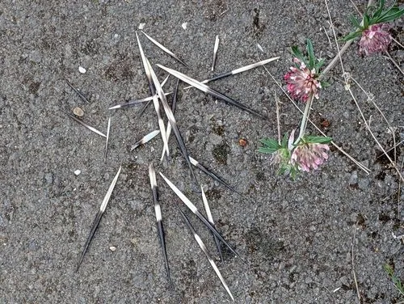

哺乳动物 · 动物界
冠豪猪 Hystrix cristata

非洲北部和意大利的豪猪，背部有黑白相间的长刺，遇敌时竖起棘刺、倒退冲撞，是非洲最大的啮齿动物。
- 分类
- 门脊索动物门纲哺乳纲目啮齿目科豪猪科属豪猪属
- 栖息环境
- 稀树草原、灌丛、森林与农田边缘
- 地理分布
- 非洲北部和撒哈拉以南非洲，以及意大利和西西里岛
- 保护级别
- IUCN 无危（LC）；非中国分布物种
物种志
冠豪猪体长 60–83 厘米，尾长 8–17 厘米，体重 13–27 千克，是非洲最大的啮齿动物。它的身体粗壮，背部、臀部和尾部覆盖黑白相间的硬刺，最长可达 35 厘米；头部有鬃毛状的长毛，形成“冠”，因此得名。
冠豪猪分布于非洲北部和撒哈拉以南非洲，以及意大利和西西里岛，栖息在稀树草原、灌丛、森林和农田边缘。它夜间活动，以树皮、根、块茎、果实和农作物为食，常单独或成对活动。遇敌时冠豪猪会竖起棘刺、抖动尾部发出沙沙声，并倒退冲撞，刺上的倒钩会扎入敌害皮肤。雌性妊娠期约 66–73 天，每胎 1–3 仔，寿命约 15–20 年。冠豪猪被列为无危。
形态与习性
- 食性树皮、根、块茎、果实与农作物
- 体长60–83 cm
- 体重13–27 kg
- 寿命15–20 年
- 繁殖妊娠约 66–73 天，每胎 1–3 仔
- 棘刺最长可达 35 cm，黑白相间
趣味知识
- 冠豪猪遇敌时会倒退冲撞，把棘刺扎进敌害身体。
- 它背部的棘刺最长可达 35 厘米，黑白相间。
- 冠豪猪是非洲体型最大的啮齿动物。